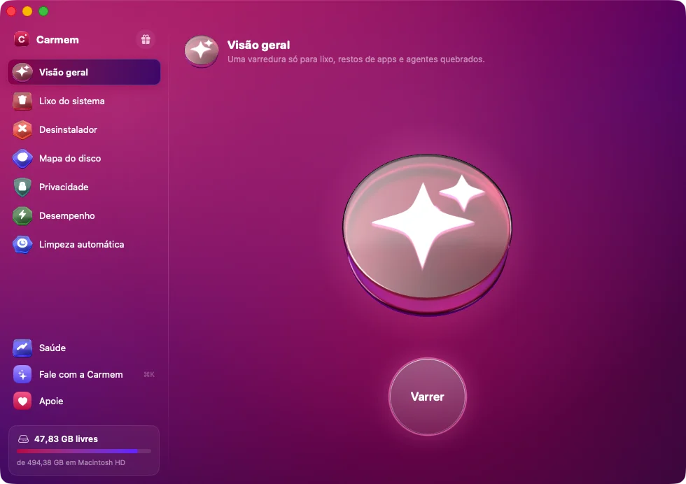

Seu Mac limpo e leve, sem pagar nada.
O Carmem encontra caches, restos de apps que você já apagou e itens quebrados que o macOS acumula — e manda tudo para a Lixeira, pronto para recuperar se precisar.
- Lixo do sistema
- Desinstalador completo
- Mapa do disco
- Limpeza automática
- Saúde do Mac
Como instalar
- Abra o arquivo baixado e arraste o Carmem para a pasta Aplicativos.
- Na primeira vez, se o macOS disser que não pode verificar o app, vá em Ajustes do Sistema → Privacidade e Segurança e clique em Abrir Mesmo Assim.
- Quando o Carmem pedir, conceda Acesso Total ao Disco para a varredura enxergar tudo.
- Pronto: as próximas versões chegam sozinhas pelo próprio app.
